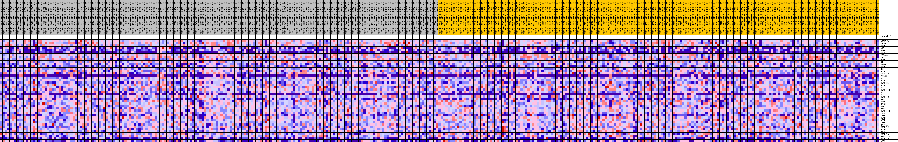
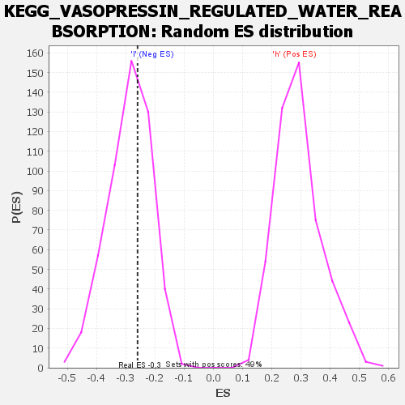

| | | Dataset | VCAN.VCAN.cls#h_versus_l.VCAN.cls#h_versus_l_repos |
| Phenotype | VCAN.cls#h_versus_l_repos |
| Upregulated in class | l |
| GeneSet | KEGG_VASOPRESSIN_REGULATED_WATER_REABSORPTION |
| Enrichment Score (ES) | -0.25969493 |
| Normalized Enrichment Score (NES) | -0.90355116 |
| Nominal p-value | 0.62671906 |
| FDR q-value | 1.0 |
| FWER p-Value | 1.0 |
Table: GSEA Results Summary
 Fig 1: Enrichment plot: KEGG_VASOPRESSIN_REGULATED_WATER_REABSORPTION
Fig 1: Enrichment plot: KEGG_VASOPRESSIN_REGULATED_WATER_REABSORPTION
Profile of the Running ES Score & Positions of GeneSet Members on the Rank Ordered List
| SYMBOL | TITLE | RANK IN GENE LIST | RANK METRIC SCORE | RUNNING ES | CORE ENRICHMENT | | 1 | ARHGDIA | na | 462 | 0.112 | 0.0465 | No |
| 2 | RAB5C | na | 559 | 0.109 | 0.0980 | No |
| 3 | CREB3 | na | 871 | 0.100 | 0.1412 | No |
| 4 | AQP4 | na | 3418 | 0.068 | 0.1284 | No |
| 5 | AVPR2 | na | 3908 | 0.064 | 0.1509 | No |
| 6 | AQP2 | na | 4248 | 0.062 | 0.1749 | No |
| 7 | PRKACA | na | 6513 | 0.048 | 0.1573 | No |
| 8 | RAB11B | na | 12991 | 0.019 | 0.0491 | No |
| 9 | DYNLL1 | na | 14775 | 0.012 | 0.0227 | No |
| 10 | STX4 | na | 14832 | 0.012 | 0.0275 | No |
| 11 | PRKACB | na | 15984 | 0.008 | 0.0107 | No |
| 12 | CREB5 | na | 16900 | 0.005 | -0.0032 | No |
| 13 | NSF | na | 17731 | 0.003 | -0.0168 | No |
| 14 | DCTN6 | na | 18840 | 0.000 | -0.0367 | No |
| 15 | ARHGDIB | na | 21244 | -0.001 | -0.0798 | No |
| 16 | PRKACG | na | 22835 | -0.005 | -0.1061 | No |
| 17 | ADCY9 | na | 24862 | -0.011 | -0.1377 | No |
| 18 | DCTN2 | na | 25977 | -0.013 | -0.1512 | No |
| 19 | DYNC2H1 | na | 27189 | -0.017 | -0.1649 | No |
| 20 | DCTN5 | na | 28966 | -0.022 | -0.1864 | No |
| 21 | ADCY6 | na | 28969 | -0.022 | -0.1757 | No |
| 22 | DYNC2LI1 | na | 29373 | -0.023 | -0.1718 | No |
| 23 | ADCY3 | na | 30182 | -0.025 | -0.1742 | No |
| 24 | AVP | na | 30191 | -0.025 | -0.1620 | No |
| 25 | DYNC1I2 | na | 30222 | -0.025 | -0.1502 | No |
| 26 | DYNC1I1 | na | 32695 | -0.032 | -0.1792 | No |
| 27 | VAMP2 | na | 33218 | -0.034 | -0.1723 | No |
| 28 | RAB5B | na | 33881 | -0.035 | -0.1670 | No |
| 29 | GNAS | na | 35456 | -0.040 | -0.1762 | No |
| 30 | DYNC1H1 | na | 35806 | -0.041 | -0.1627 | No |
| 31 | DYNC1LI1 | na | 35876 | -0.041 | -0.1440 | No |
| 32 | PRKX | na | 35880 | -0.041 | -0.1242 | No |
| 33 | CREB3L1 | na | 36962 | -0.043 | -0.1226 | No |
| 34 | DYNLL2 | na | 38833 | -0.048 | -0.1328 | No |
| 35 | DCTN1 | na | 41007 | -0.054 | -0.1456 | No |
| 36 | CREB1 | na | 44308 | -0.064 | -0.1742 | No |
| 37 | RAB11A | na | 49031 | -0.079 | -0.2209 | Yes |
| 38 | CREB3L2 | na | 50208 | -0.085 | -0.2009 | Yes |
| 39 | DCTN4 | na | 50486 | -0.086 | -0.1640 | Yes |
| 40 | RAB5A | na | 51649 | -0.092 | -0.1400 | Yes |
| 41 | CREB3L4 | na | 51862 | -0.093 | -0.0982 | Yes |
| 42 | DYNC1LI2 | na | 52059 | -0.095 | -0.0555 | Yes |
| 43 | CREB3L3 | na | 53461 | -0.106 | -0.0291 | Yes |
| 44 | AQP3 | na | 54719 | -0.126 | 0.0099 | Yes |
Table: GSEA details [plain text format]

Fig 2: KEGG_VASOPRESSIN_REGULATED_WATER_REABSORPTION
Blue-Pink O' Gram in the Space of the Analyzed GeneSet

Fig 3: KEGG_VASOPRESSIN_REGULATED_WATER_REABSORPTION: Random ES distribution
Gene set null distribution of ES for KEGG_VASOPRESSIN_REGULATED_WATER_REABSORPTION